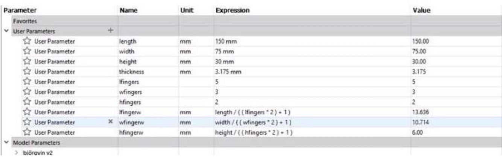
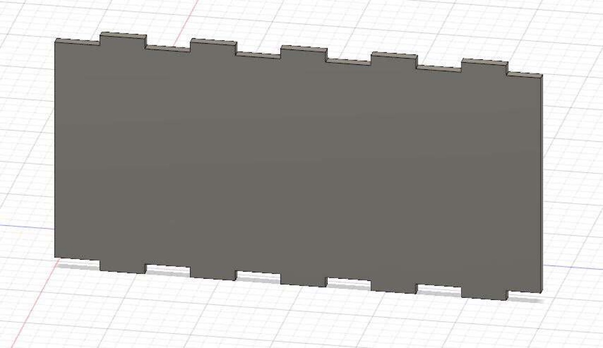
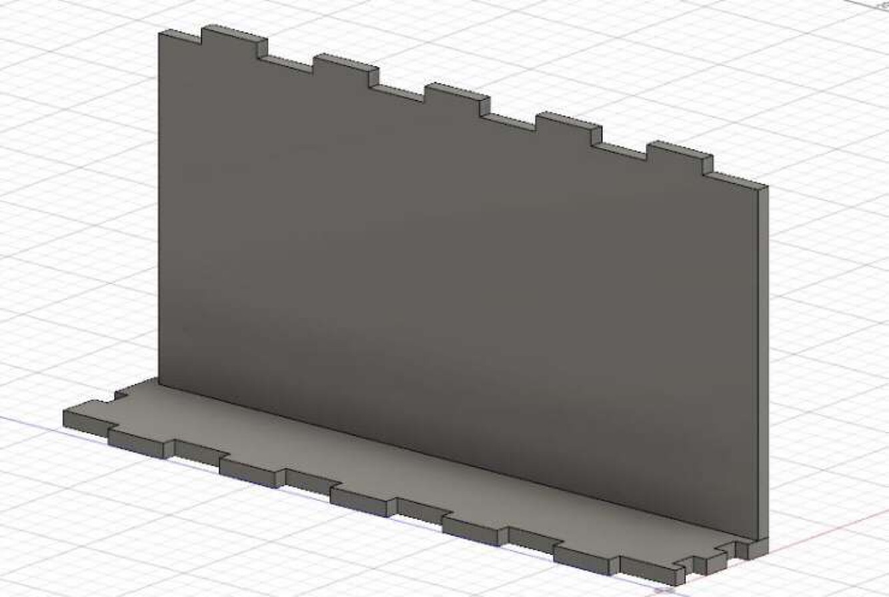
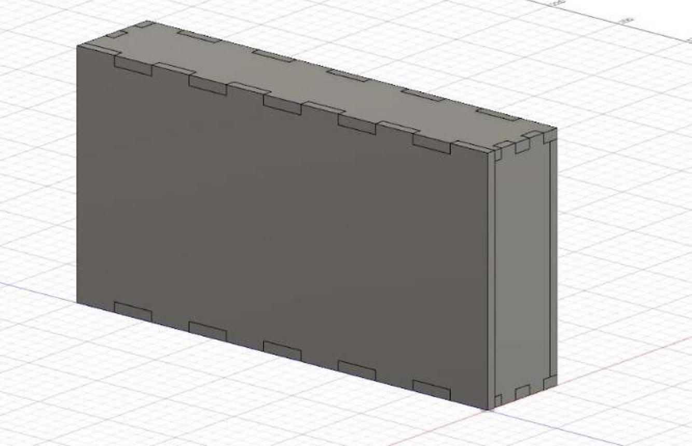
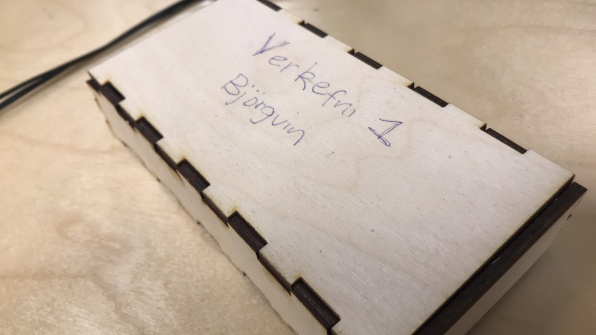

Framkvæmd verkefnis
In assignment 2 we are supposed to use CAD software to build a parametric design of a pressfit construction kit, then cut the design with a laser cutter and document the process and upload our design files. I decided to use Fusion 360 to design the pressfit construction. I watched the video that Hafliði had linked on the classes website and followed that.
I started by making the parameters as shown in the video and here you can see the parameters.

Then I started to sketch my box and it went as following.


We type in the dimension by using the parameters as shown in the first image. To get the bodies to fit I used combine in the modify section and cut it so bot side would fit. Then we make the other side by choosing the object we want to duplicate and choose extrude then from object and choose the side we want the new object to go. Next we put panels on the bottom. I also decided to add a seal to the box and then I just extruded the bottom part. This was the final result in Fusion :

The last part was to laser cut all of the parts. We did that by using Inkscape. This was the final result :
